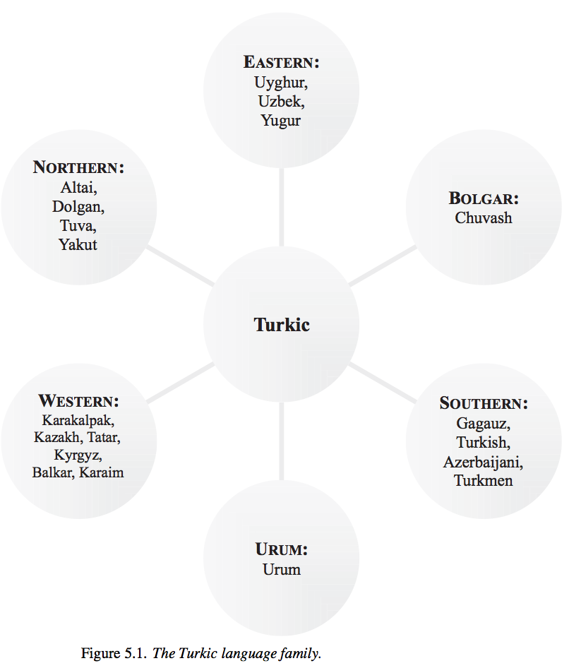

One of the long-answer questions will be on the test!
Morphological Type
Isolating vs. Synthetic
Agglutinating vs. Fusional
Turkic Languages!
Semitic Languages!
The study of how words are put together
A means of categorizing how languages put words together
We care about two “dimensions”:
Do words have lots of morphemes or few?
If they have multiple morphemes, do they blend together, or are they easy to pick apart?
If words have few morphemes (like English or Chinese), they’re “isolating”
If they have many (like Spanish or German), they’re “synthetic”
I did see the cat on the street, he’s cute.
1sg did see DEF cat on DEF street 3sg-be.3sg cute.
Esta escribiéndomelo
be.3sg write-GER-1sg.DAT-3sg.MASC
‘He/she is writing it to me.’
Kiyakiicíwa:cé:hirʔasʔirhawi
‘There was the big buffalo lying there.’
If they’re glued together loosely, it’s “agglutinating”
If they merge inseparably, it’s “fusional”.
Donaudampfschifffahrtselektrizitätenhauptbetriebswerkbauunterbeamtengesellschaft
Donau-dampf-schiff-fahrts-elektrizitäten-haupt-betriebs-werk-bau-unter-beamten-gesellschaft
Danube-steam-ship-transport’s-electricities-head-operation’s-work-building-under-officials-association
Ti uhodila co mnoi
Ti u-hodi-la co mnoi
2sg.NOM away-go.IMPERF-past.FEM with 1sg.INST
“You left with me”
Durmiéramos
Durmiéramos
Sleep.2pl.SUBJ.PAST.IMPERFECT
Neither term applies to highly isolating languages
English is isolating, but Mandarin is more isolating
Most languages do some fusion and some agglutination
Thanks, SpecGram!
| ### Morphological Type - Review! |
 |
| Thanks, SpecGram! |

If a language has few morphemes per word, it’s isolating
If the language has multiple morphemes per word, it’s synthetic
If a synthetic language has easy-to-pick-apart morphemes, it’s agglutinating
If a synthetic language has blended or combined morphemes, it’s fusional
Maratha halatar sallabeorn nsaah
Mara-tha hala-tar sal-la-beorn nsa-ah
hamster-ERG drug.dealer-ABS report-PAST-3SG NSA-DAT
“The Hamster reported the drug dealer to the NSA”
This language is:
Isolating
Synthetic, Aggulatinating
Synthetic, Fusional
yesika kan yer pikula faret rundi Michael Bay
yesika kan yer pikula faret rundi Michael Bay
Jessica watch yesterday movie ruined from Michael Bay
“Jessica watched a movie which Michael Bay ruined”
This language is:
Isolating
Synthetic, Aggulatinating
Synthetic, Fusional
harestats T-Rex prostatimfibulartha
hare-stats T-Rex prostat-im-fibul-artha
google-3sg.inanimate.past.IMP T-Rex.NOM prosthetic-PL-ARM.inanimate-extend.3PL.Inanimate.ACC
“The T-Rex googled”Prosthetic Arm Extensions””
This language is:
Isolating
Synthetic, Aggulatinating
Synthetic, Fusional
Speaking of heavily agglutinating…


Turkic is one of the top-level language families
~35 Turkic languages, depending where you draw the line
Over 200 million speakers of Turkic
Agglutinative Morphology
SOV order
No grammatical gender
Evidentials!
Vowel Harmony!
Been there, done that…
Describes the speaker’s knowledge of the topic under discussion
Inferentiality (“I know it” vs. “I inferred it”)
Evidentiality (direct vs. circumstantial vs. hearsay vs. assumption)
‘gel-di’ “He came”
‘gel-miş’ “He came, to the best of my knowledge”
When vowels change to match the other vowels in the word

—
Türkiye’dir - ‘it is Turkey’
kapidir - ‘it is the door’
gündür - ‘it is day’
paltodur -‘it is the coat’
The vowel in the last syllable changes depending on the other vowels!
Let’s hear some Turkic Languages!
(Tuvans don’t always do that, but throat-singing is just too cool not to show)
I have no idea how to smoothly transition into…


Maybe top-level, maybe “Afroasiatic”
Widely spoken (~475 million speakers!)
Arabic (all dialects) - 300 million speakers
Amharic (Ethiopia) - 21 million
Hebrew (Israel) - 7 million
Tigrinya (Ethiopia) - 6.5 million
Aramaic (Middle East) - 550,000
Case
Emphatic Consonants
Templatic Morphology
Semitic languages usually have NOM, ACC, and Genitive
Consonants produced with a secondary pharyngeal articulation in the back of the mouth

“I’m not even going to try and pronounce these” - Will

تين (figs) - طين (mud)
سور (fence) - صور (Tyre, city in Lebanon)
ذل (humiliation) - ظل (shadow)
(or watch this video)
Words are formed by inserting and replacing sounds into different parts of the word

k_t_b = “book”
k_t_v = “write”
Word roots are “incomplete”, and are turned into words by filling in the blanks
Words sharing a set of consonants (root) will have similar meanings
All Semitic languages use templatic morphology
You come upon a language which displays Templatic Morphology. ‘Jeleb’ means “Duck”. ‘Jalob’ means “To quack”. ‘Julab’ likely means…
So, about those Semitic Languages…
Died as a spoken language in 1st to 4th Centuries CE
Survived only as a liturgical language in Judaism
Resurrected (rebuilt, reconstructed) in the 19th Century
Now has around 7 million speakers
One of Israel’s official languages
(World’s most popular ConLang?)
Hebrew has a particularly famous speaker…

… and maybe Jesus

Around 300 million speakers around the world
Many different dialects

Around 300 million speakers around the world
Many different dialects
All are written using the Arabic script
English
All human beings are born free and equal in dignity and rights. They are endowed with reason and conscience and should act towards one another in a spirit of brotherhood.
Arabic
يولد جميع الناس أحراراً متساوين في الكرامة والحقوق، وقد وهبوا عقلاً وضميراً وعليهم أن يعامل بعضهم بعضاً بروح الإخاء.1
Around since ~500 BCE
Language of the books of Daniel and Ezra
Used in the Dead Sea Scrolls (although Jewish Aramaic is different)
Modern Aramaic is still spoken (although it’s endangered)
Aramaic has a particularly famous speaker
(Although he probably also spoke Hebrew, Koine Greek, and maybe Latin)
Mel Gibson’s 2004 “the Passion of the Christ” is done mostly in “Aramaic”
This is reconstructed old Aramaic, with blanks filled in from 4th Century Aramaic
… and a less well-known Semitic language!
Spoken by 25 million people in Ethiopia
Uses ejectives instead of emphatic consonants
Considered a sacred language by Rastafarians
It has an awesome writing system too!

We classify languages by morphological type
Isolating vs. Synthetic
Agglutinating vs. Fusional
Turkic Languages are awesome
Semitic Languages are also awesome
http://savethevowels.org/world/slides/lotw_9.html